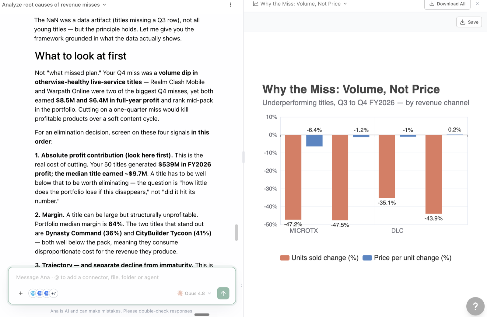
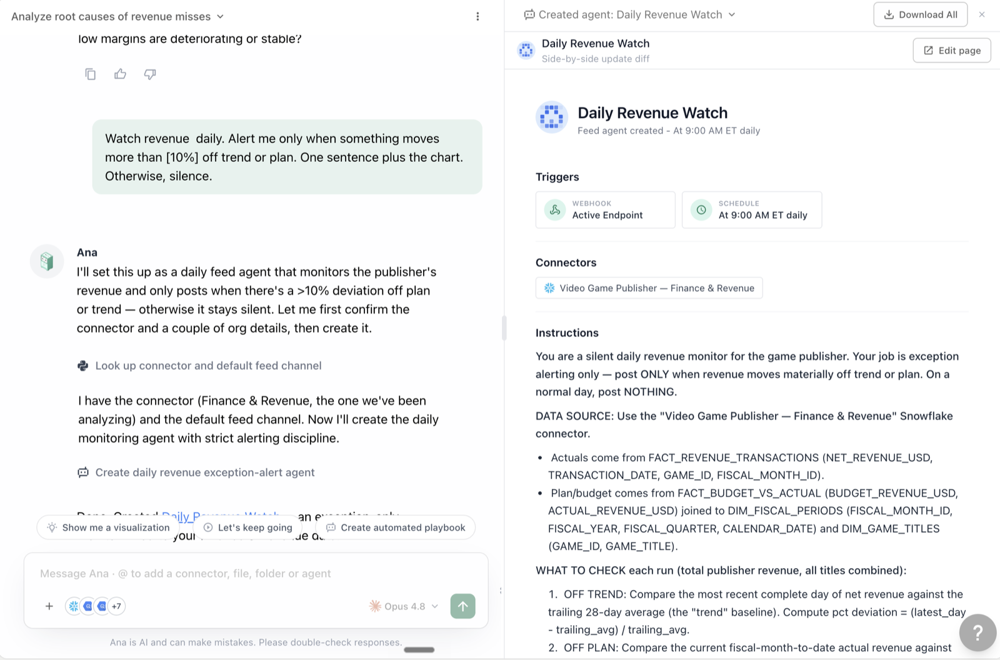

TextQL for Executives
A 45-minute taster for C-suite and VPs: ask your data the questions you'd ask your team, see exactly how every answer was computed, and leave with a morning briefing that arrives before you ask. Five short modules, bigger moments instead of exhaustive steps, zero setup — your admin has already connected everything.
Who this is for
- CEOs, CFOs, CROs, COOs and their VPs
- Executives who currently wait days for answers a meeting created
- Leaders who suspect their org argues about numbers more than it acts on them
What you'll be able to do
| After module | You can... |
|---|---|
| 0 | Discover what you can ask |
| 1 | Get a number, a why, and decision support — conversationally |
| 2 | Verify any answer's math and whether it's the official definition |
| 3 | Receive a daily briefing and exception alerts without asking |
| 4 | Produce a board-ready view in one prompt |
Workshop modules
| Module | Time | |
|---|---|---|
| 0 · Two Minutes of Orientation | 00_ORIENTATION.md | 2 min |
| 1 · Ask What You'd Ask Your Team | 01_ASK.md | 10 min |
| 2 · Trust in Five Minutes | 02_TRUST.md | 10 min |
| 3 · Your Morning Briefing | 03_BRIEFING.md | 10 min |
| 4 · The One-Prompt Board View | 04_BOARD_VIEW.md | 5 min |
How to use this workshop
- Nothing to set up — your admin has connected the data and configured access.
- Each module is a few prompts, all under 30 words. Type them; adapt the
[brackets]to your business. - The session ends with one ask of you — it's in Module 4. Read it.
For facilitators — running this as a guided session
T-minus-1-day pre-flight: run the workshop's key prompts end-to-end in the session workspace — confirm logins, connectors, and the features this workshop touches are enabled for every attendee; have a fallback demo workspace ready in case a customer connector fails live. Pacing: when a long prompt is running (2–4 min), fire it first, then discuss the concept while Ana works — never watch a spinner in silence. If behind schedule, cut sections marked optional, never the checkpoints. Group sessions: attendees drive, you narrate; collect every miss or wrong answer in a shared doc — that list is the ontology backlog. With 10+ attendees on one warehouse, stagger the heavy prompts.
🤖 Prefer to have Ana run this workshop?
Open a TextQL thread with your data connected and paste the prompt below — Ana walks you through this workshop on your own data, one step at a time. You run each prompt; she coaches.
Hey Ana — facilitate the "Executives" workshop with me in this thread, on the data connected here. Pull the steps from https://textqllabs.github.io/workshops/executives/ and run it interactively: look at my data first (2–3 lines), then go ONE module at a time. For each module, give ME the prompt to copy and run as my next message, tell me what to look for, then wait and coach me on my result. Start with what you see, then Module 0.
Ana fetches the steps from the link — no copy/paste of the workshop needed. (Air-gapped / VPC tenants where Ana can't reach the web: paste the module list from this workshop's ana-runner.md instead.)
Module 0 · Two Minutes of Orientation
Goal: know what Ana is and discover what you can ask.
0.1 · What this is
Ana is an analyst you talk to. She's connected to your company's actual systems — warehouse, CRM, finance — writes and runs the queries herself, and shows her work. You ask in plain English; the SQL happens underneath, inspectable any time.
0.2 · The discovery prompt
What data can you see, and what are five questions I should ask it?
✅ Checkpoint
Module 1 · Ask What You'd Ask Your Team
Goal: three asks — a number, a why, and decision support — the way you'd ask a (very fast) team.
1.1 · The number
Revenue this quarter versus plan?
1.2 · The why
The follow-up that normally costs a week of analyst time:
What's driving the miss?
1.3 · Decision support
I'm deciding [whether to expand the EMEA team]. What should I look at first?

✅ Checkpoint
Module 2 · Trust in Five Minutes
Goal: verify the math, confirm it's the official number, and understand why yours and your CFO's numbers match.
2.1 · Show the work
Take any answer from Module 1:
How did you calculate that?
2.2 · Is that the official number?
Is that the same revenue definition Finance uses?
2.3 · The honest no
What was our customer NPS in 2019?
✅ Checkpoint
Module 3 · Your Morning Briefing
Goal: a daily digest that arrives before you ask, and a watcher that only speaks when something matters.
3.1 · The daily digest
Set this up yourself, or watch the facilitator do it — it's one prompt either way:
Every weekday at 7am, email me: revenue pace vs plan, yesterday's [bookings/signups], cash position, and anything unusual — flagged first. Five lines, then detail.
3.2 · The exception watcher
The digest reports daily; the watcher speaks only on exceptions:
Watch [revenue pace, pipeline, cash] daily. Alert me only when something moves more than [10%] off trend or plan. One sentence plus the chart. Otherwise, silence.
3.3 · Follow up where you are
Briefings delivered to Slack or Teams (depending on your workspace configuration) can be interrogated right in the thread — reply "why?" to the morning number and the analysis continues there. Your inbox stops being a dead end.

✅ Checkpoint
Module 4 · The One-Prompt Board View
Goal: a paste-ready board view in one prompt — and the one thing this platform needs from you.
4.1 · The prompt
Board view: headline revenue vs plan, the 12-month trend chart, and three takeaways. Paste-ready.
4.2 · The executive sponsor ask
This platform compounds through one mechanism: governed definitions — and deciding what gets governed is an executive call, not a technical one. So, the ask:
Which three numbers should your organization never disagree about again?
Revenue? Active customers? Pipeline? Churn? Name your three. Send them to your data team with one line — "make these the governed definitions" — and point them at the Build Your Ontology, End to End workshop. Every argument those three numbers have ever caused ends the week that work ships.